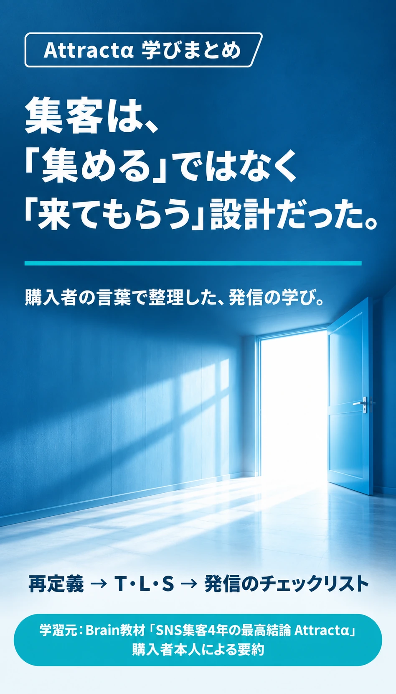
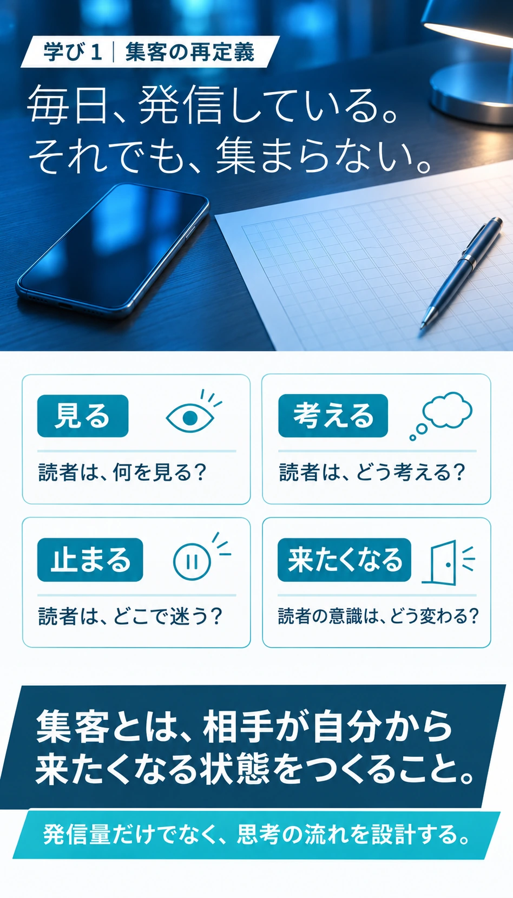
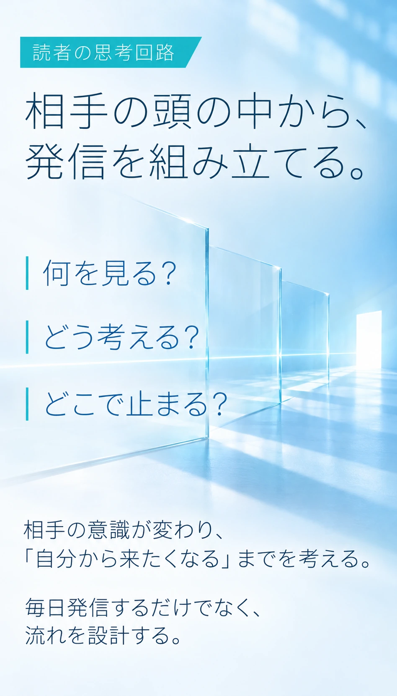
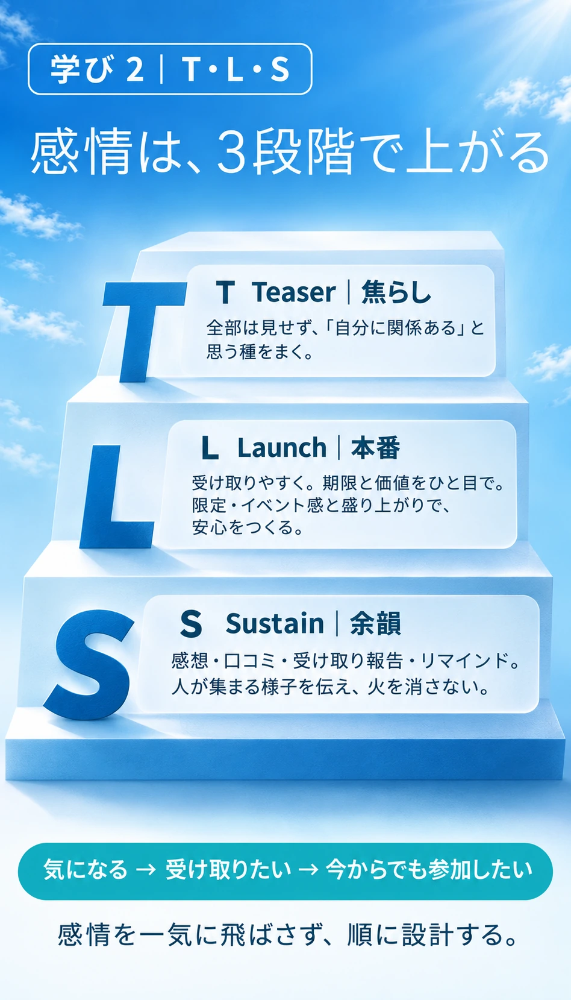
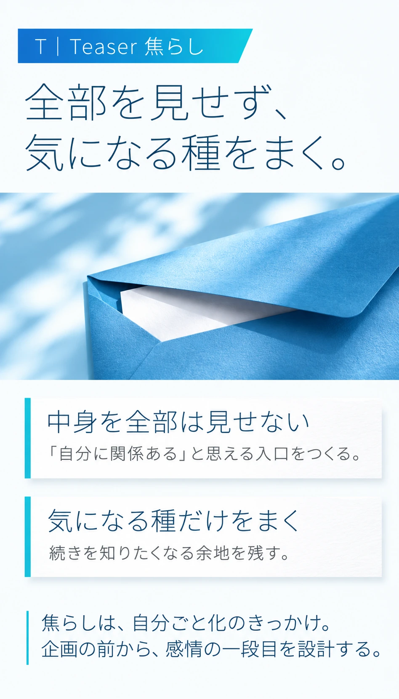
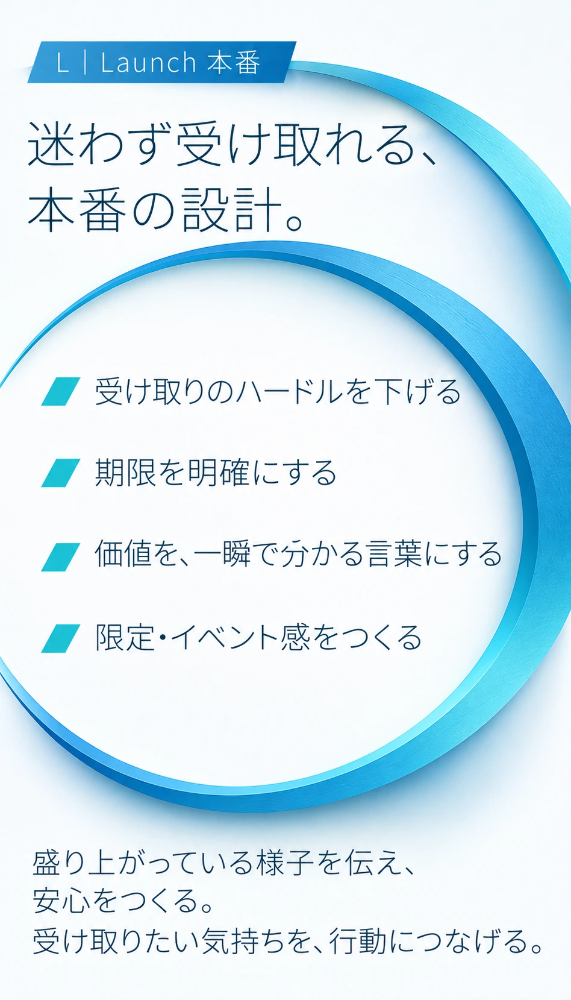
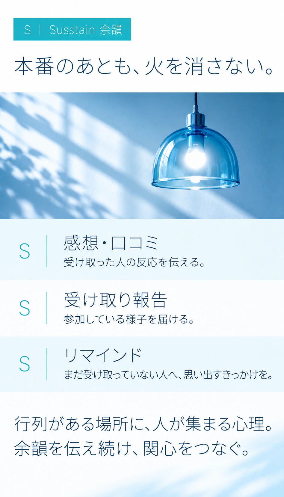
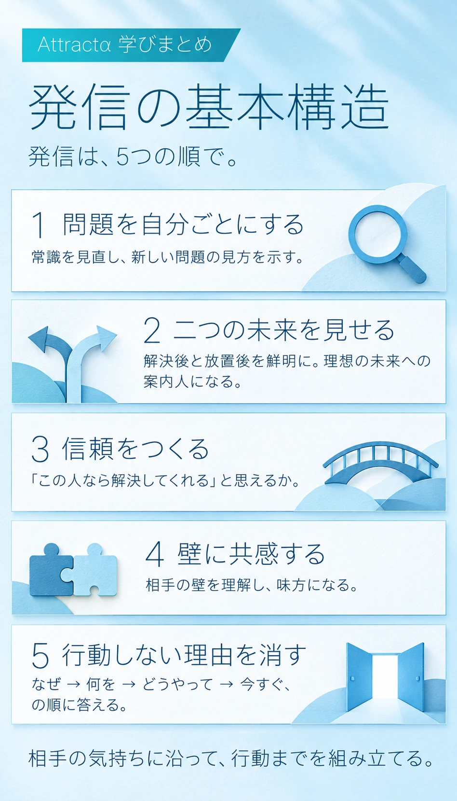
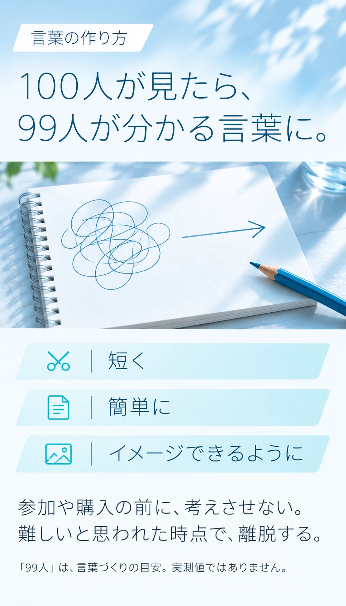
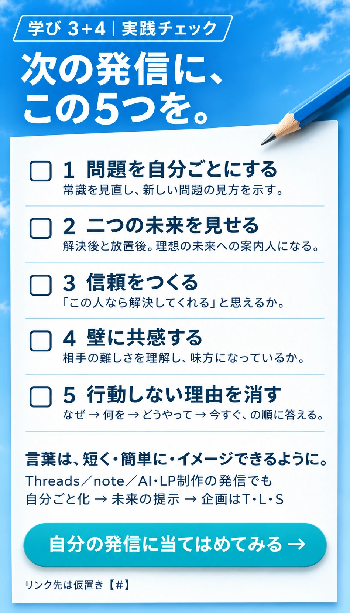

集客は「集める」ではなく「来てもらう」設計だった。
Attractα 学びまとめ。購入者の言葉で整理した、発信の学び。再定義 → T・L・S → 発信のチェックリスト。学習元：Brain教材「SNS集客4年の最高結論 Attractα」。購入者本人による要約。

毎日、発信している。それでも、集まらない。
学び1 集客の再定義。見る：読者は、何を見る？ 考える：読者は、どう考える？ 止まる：読者は、どこで迷う？ 来たくなる：読者の意識は、どう変わる？ 集客とは、相手が自分から来たくなる状態をつくること。発信量だけでなく、思考の流れを設計する。

相手の頭の中から、発信を組み立てる。
読者の思考回路。何を見る？ どう考える？ どこで止まる？ 相手の意識が変わり、「自分から来たくなる」までを考える。毎日発信するだけでなく、流れを設計する。

感情は、3段階で上がる
学び2 T・L・S。T Teaser 焦らし：全部は見せず、「自分に関係ある」と思う種をまく。L Launch 本番：受け取りやすく。期限と価値をひと目で。限定・イベント感と盛り上がりで、安心をつくる。S Sustain 余韻：感想・口コミ・受け取り報告・リマインド。人が集まる様子を伝え、火を消さない。気になる → 受け取りたい → 今からでも参加したい。感情を一気に飛ばさず、順に設計する。

全部を見せず、気になる種をまく。
T Teaser 焦らし。中身を全部は見せない。「自分に関係ある」と思える入口をつくる。気になる種だけをまく。続きを知りたくなる余地を残す。焦らしは、自分ごと化のきっかけ。企画の前から、感情の一段目を設計する。

迷わず受け取れる、本番の設計。
L Launch 本番。受け取りのハードルを下げる。期限を明確にする。価値を、一瞬で分かる言葉にする。限定・イベント感をつくる。盛り上がっている様子を伝え、安心をつくる。受け取りたい気持ちを、行動につなげる。

本番のあとも、火を消さない。
S Sustain 余韻。感想・口コミ：受け取った人の反応を伝える。受け取り報告：参加している様子を届ける。リマインド：まだ受け取っていない人へ、思い出すきっかけを。行列がある場所に、人が集まる心理。余韻を伝え続け、関心をつなぐ。

発信は、5つの順で。
Attractα 学びまとめ。発信の基本構造。1 問題を自分ごとにする：常識を見直し、新しい問題の見方を示す。2 二つの未来を見せる：解決後と放置後を鮮明に。理想の未来への案内人になる。3 信頼をつくる：「この人なら解決してくれる」と思えるか。4 壁に共感する：相手の壁を理解し、味方になる。5 行動しない理由を消す：なぜ → 何を → どうやって → 今すぐ、の順に答える。相手の気持ちに沿って、行動までを組み立てる。

100人が見たら、99人が分かる言葉に。
言葉の作り方。短く。簡単に。イメージできるように。参加や購入の前に、考えさせない。難しいと思われた時点で、離脱する。「99人」は、言葉づくりの目安。実測値ではありません。

次の発信に、この5つを。
学び3＋4 実践チェック。1 問題を自分ごとにする：常識を見直し、新しい問題の見方を示す。2 二つの未来を見せる：解決後と放置後。理想の未来への案内人になる。3 信頼をつくる：「この人なら解決してくれる」と思えるか。4 壁に共感する：相手の難しさを理解し、味方になっているか。5 行動しない理由を消す：なぜ → 何を → どうやって → 今すぐ、の順に答える。言葉は、短く・簡単に・イメージできるように。Threads／note／AI・LP制作の発信でも、自分ごと化 → 未来の提示 → 企画はT・L・S。自分の発信に当てはめてみる。

自分の発信に当てはめてみる